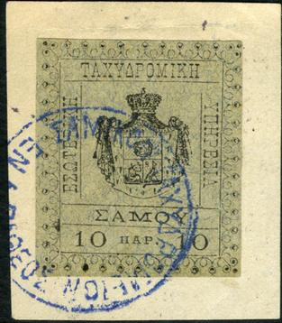
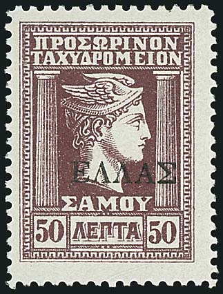
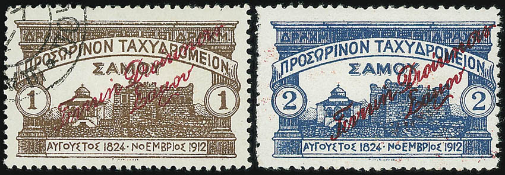

Return To Catalogue - Greece overview
Note: on my website many of the
pictures can not be seen! They are of course present in the
catalogue;
contact me if you want to purchase the catalogue.

The values 5 pa black on grey, 10 pa black on green, 20 pa black and 1 Gr exist.
A similar unissued stamp of 1 Pi blue exists and was issued in 1878 (arms only, no inscription).

Reduced sizes
Value of the stamps |
|||
vc = very common c = common * = not so common ** = uncommon |
*** = very uncommon R = rare RR = very rare RRR = extremely rare |
||
| Value | Unused | Used | Remarks |
| blue | *** | - | Envelope |
| red | *** | - | Wrapper |
Cuts from these postal stationaries seem to have been used as postage stamps.
I have seen the values 10 pa brown, 20 pa red and 1 Pi blue. The value 5 pa green should also exist. They all have zig-zag perforation.

Somekind of label, inscription 'PRINCIPAUTE DE SAMOS', greek text
and arabic text

(genuine?)
5 l green 10 l red 25 l blue
An erroneous 25 l in the colour green instead of blue seems to exist (I have never seen it). These were actually proofs that accidentally were sold (2 sheets with each 18 stamps of these erroneous colour stamps were sold).
Value of the stamps |
|||
vc = very common c = common * = not so common ** = uncommon |
*** = very uncommon R = rare RR = very rare RRR = extremely rare |
||
| Value | Unused | Used | Remarks |
| 5 l | *** | *** | Exist tete-beche: RR |
| 10 l | *** | ** | Exist tete-beche: RR |
| 25 l | *** | *** | Exist tete-beche: RR |
According to 'The Forged Stamps of All Countries' by J.Dorn the 'E' of 'EION' should have its center stroke too low and the 'O' in 'SAMOY' should be squarish in the genuine stamps.
The next two stamps are forgeries, they are both cancelled with 'BAQY 21 NOEM 1912 VATHY', I have also seen the 5 l green with the same cancel (this cancel is also shown in Billig's forgery book):
Forgery with round 'O' in 'SAMOY'
(reduced size)
1 l grey 5 l green 10 l red 25 l blue 50 l brown
These stamps have perforation 11 1/2. Bisected 10 l stamps exist (used as 5 l stamps).
Value of the stamps |
|||
vc = very common c = common * = not so common ** = uncommon |
*** = very uncommon R = rare RR = very rare RRR = extremely rare |
||
| Value | Unused | Used | Remarks |
| 1 l | * | * | |
| 5 l | * | * | |
| 10 l | * | * | |
| 25 l | * | * | |
| 50 l | * | * | |
Overprinted 'ELLAS' (1913)

(Fat overprint at the left hand side and thin overprint at the
right hand side)
1 l grey 5 l green 10 l red 25 l blue 50 l brown 1 D orange
The overprint exists in two types, type 1: fat and type 2: thin.
Value of the stamps |
|||
vc = very common c = common * = not so common ** = uncommon |
*** = very uncommon R = rare RR = very rare RRR = extremely rare |
||
| Value | Unused | Used | Remarks |
| Type 1: fat overprint | |||
| 1 l | c | c | |
| 5 l | * | * | |
| 10 l | * | * | |
| 25 l | * | * | |
| 50 l | ** | ** | |
| 1 D | *** | *** | |
| Type 2: thin overprint | |||
| 1 l | *** | *** | |
| 5 l | *** | *** | |
| 10 l | *** | *** | |
| 25 l | *** | *** | |
| 50 l | *** | *** | |
Further overprinted with circular text (with fat 'ELLAS' overprint)


1 l grey (red or black overprint) 5 l green 10 l red (black or red overprint) 25 l blue (black or red overprint) 50 l brown (black or red overprint) 1 D orange (red overprint) 'LEPTON' (= 1 l) on 1 D orange (red overprint)
Value of the stamps |
|||
vc = very common c = common * = not so common ** = uncommon |
*** = very uncommon R = rare RR = very rare RRR = extremely rare |
||
| Value | Unused | Used | Remarks |
| 1 l | *** | *** | Black overprint: RR |
| 5 l | * | * | |
| 10 l | * | * | Red overprint: RR |
| 25 l | * | * | Red overprint: RR |
| 50 l | * | * | Red overprint: RR |
| 1 D | ** | ** | |
| 1 l on 1 D | *** | *** | |
Forgeries, example:
The genuine stamps should have 6 shade lines before the eye. Futhermore, according to the Serrane guide, forgeries measure 21 mm in width, while genuine stamps are 21 1/2 mm. If my information is correct, a certain F.Germack from Paris sold these forgeries.
1 D brown 2 D blue 5 D green 10 D green 25 D red
These stamps have perforation 12 and have a signature (in red for 1 D to 10 D).
Value of the stamps |
|||
vc = very common c = common * = not so common ** = uncommon |
*** = very uncommon R = rare RR = very rare RRR = extremely rare |
||
| Value | Unused | Used | Remarks |
| 1 D | *** | *** | |
| 2 D | *** | *** | |
| 5 D | *** | *** | |
| 10 D | RR | RR | |
| 25 D | RR | RR | Black signature |
Overprinted with greek text
(reduced size)
1 D brown 2 D blue 5 D green 10 D green 25 D red
These stamps exist with or without the signature of the previous issue.
Value of the stamps |
|||
vc = very common c = common * = not so common ** = uncommon |
*** = very uncommon R = rare RR = very rare RRR = extremely rare |
||
| Value | Unused | Used | Remarks |
| 1 D | *** | *** | |
| 2 D | *** | *** | |
| 5 D | R | R | |
| 10 D | RR | RR | |
| 25 D | RR | RR | |
Forgeries exist of these stamps, made by the printer of the genuine stamps (on thinner paper). Genuine stamps have a dot in the white line above and the white line below the '2' of '1912'.

Forged stamps with forged overprints.
For stamps of France with overprint 'Vathy' and value, see Cd 1.


{kind=link}
{kind=link}
{kind=link}